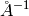

NormaliseByPeakArea dialog.
Table of Contents
| Name | Direction | Type | Default | Description |
|---|---|---|---|---|
| InputWorkspace | Input | MatrixWorkspace | Mandatory | An input workspace. |
| Mass | Input | number | Mandatory | The mass, in AMU, defining the recoil peak to fit |
| Sum | Input | boolean | True | If true all spectra on the Y-space, fitted & symmetrised workspaces are summed in quadrature to produce the final result |
| OutputWorkspace | Output | MatrixWorkspace | Mandatory | Input workspace normalised by the fitted peak area |
| YSpaceDataWorkspace | Output | MatrixWorkspace | Mandatory | Input workspace converted to units of Y-space |
| FittedWorkspace | Output | MatrixWorkspace | Mandatory | Output from fit of the single mass peakin y-space. The output units are in momentum (A^-1) |
| SymmetrisedWorkspace | Output | MatrixWorkspace | Mandatory | The input data symmetrised about Y=0. The output units are in momentum (A^-1) |
Takes an input TOF spectrum from LoadVesuvio and converts it to Y-space using the ConvertToYSpace algorithm. The result is then fitted using the ComptonPeakProfile function and the given mass to produce an estimate of the peak area. The input data is normalised by this value.
The input workspace is required to be a point data workspace, see
ConvertToPointData, and each detector is required to have
an instrument parameter named t0 that specifies the detector delay time in  , see
SetInstrumentParameter.
, see
SetInstrumentParameter.
The algorithm has 4 outputs:
If the sum option is requested then all input spectra are rebinned, in steps of 0.5 , to a common Y grid and then summed to give a single spectrum.
Example - Normalise without summation:
###### Simulates LoadVesuvio #################
tof_ws = CreateSimulationWorkspace(Instrument='Vesuvio',BinParams=[50,0.5,562],UnitX='TOF')
tof_ws = CropWorkspace(tof_ws,StartWorkspaceIndex=0,EndWorkspaceIndex=4)
tof_ws = ConvertToPointData(tof_ws)
SetInstrumentParameter(tof_ws,ParameterName='t0',ParameterType='Number',Value='0.5')
##############################################
normalised, yspace, fitted, symmetrised = \
NormaliseByPeakArea(InputWorkspace=tof_ws, Mass=1.0079,Sum=False)
print "Number of normalised spectra is: %d" % normalised.getNumberHistograms()
print "Number of Y-space spectra is: %d" % yspace.getNumberHistograms()
print "Number of fitted spectra is: %d" % fitted.getNumberHistograms()
print "Number of symmetrised spectra is: %d" % symmetrised.getNumberHistograms()
Number of normalised spectra is: 5
Number of Y-space spectra is: 5
Number of fitted spectra is: 5
Number of symmetrised spectra is: 5
Example - Normalise with summation:
###### Simulates LoadVesuvio #################
tof_ws = CreateSimulationWorkspace(Instrument='Vesuvio',BinParams=[50,0.5,562],UnitX='TOF')
tof_ws = CropWorkspace(tof_ws,StartWorkspaceIndex=0,EndWorkspaceIndex=4)
tof_ws = ConvertToPointData(tof_ws)
SetInstrumentParameter(tof_ws,ParameterName='t0',ParameterType='Number',Value='0.5')
##############################################
normalised, yspace, fitted, symmetrised = \
NormaliseByPeakArea(InputWorkspace=tof_ws, Mass=1.0079,Sum=True)
print "Number of normalised spectra is: %d" % normalised.getNumberHistograms()
print "Number of Y-space spectra is: %d" % yspace.getNumberHistograms()
print "Number of fitted spectra is: %d" % fitted.getNumberHistograms()
print "Number of symmetrised spectra is: %d" % symmetrised.getNumberHistograms()
Number of normalised spectra is: 5
Number of Y-space spectra is: 1
Number of fitted spectra is: 1
Number of symmetrised spectra is: 1
Categories: Algorithms | CorrectionFunctions | NormalisationCorrections